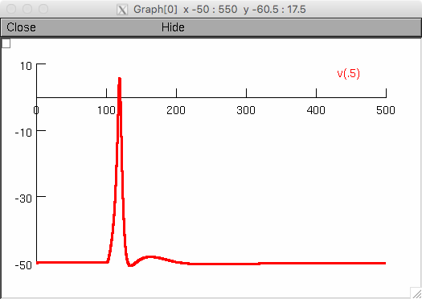

This is the readme for the model associated with the paper:
Mahapatra C, Brain KL, Manchanda R (2018) A biophysically constrained computational model of the action potential of mouse urinary bladder smooth muscle PLOS One
This model was contributed by C Mahapatra and requires NEURON which is freely a available from http://neuron.yale.edu
Fig 10A of the paper. Following a synaptic input, our model, in its
default setting, is able to generate spike type action potential with
an after depolarization riding on the repolarization phase. The
conductance, rising phase and falling phase time constants for the
synaptic conductance (see Exp2Syn) are set to 0.0095 μS, 15 ms, and 25
ms respectively.
How to run:
-----------
Compile the mod files (mknrndll on mswin or graphical mac os x, nrnivmodl on linux/unix) and then start detrusor.hoc (nrngui). If you need extra help please consult https://senselab.med.yale.edu/ModelDB/NEURON_DwnldGuide.cshtml
Click the "Init & Run" button. You should see a graph (similar to figure 10A in the paper):

By changing the conductance, rising phase, and falling
phase time constants values, this model can generate different types
of spikes which are shown in Fig 11C.